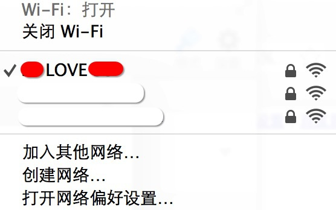
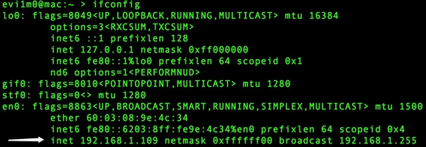
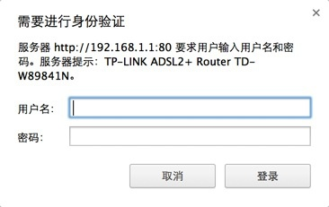
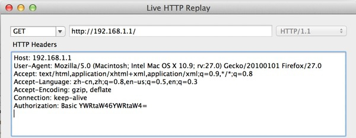
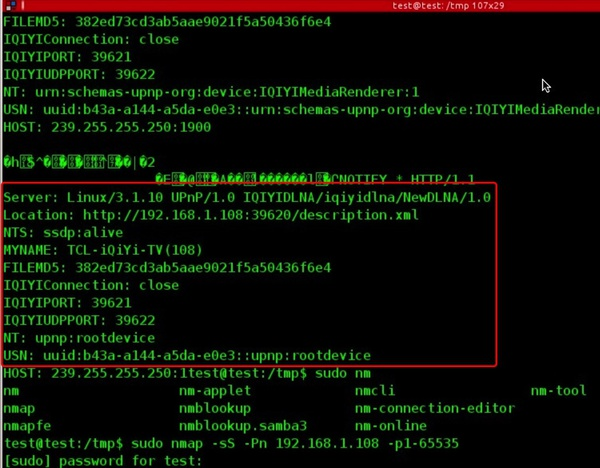
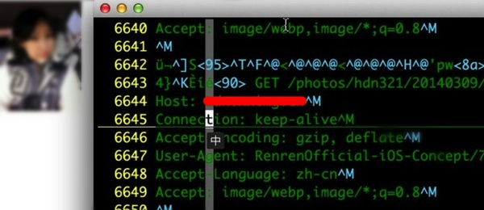
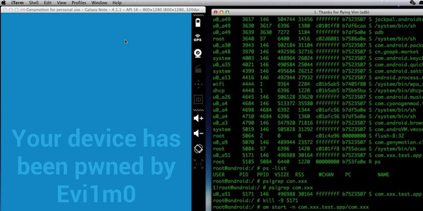
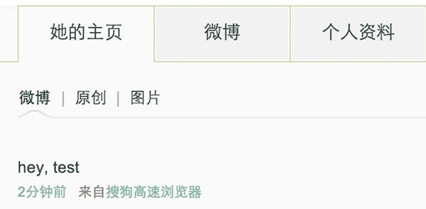
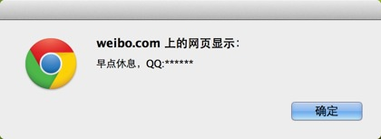
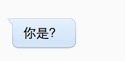

其实这个问题可以理解为：蹭网之后，能做些什么？
不少人的八卦心窥探欲还是很强烈的，强烈到让人恐惧。所以很多人喜欢看一些八卦文章，比如：如何优雅的窥探别人？
通常这样的文章很容易火起来，因为不少人都喜欢看而且百看不厌。
最近路由安全沸沸扬扬，可以翻阅我微信公众号历史文章查看关于路由安全的文章以及央视当时的采访。鉴于天时地利人和，最后我成功的在现实生活中上演了这样一场精彩好戏，为了满足众人的欲望，我就写成故事。大家好好琢磨琢磨蹭网之后，我们还能做些什么？
声明： 这是一个虚构故事，图片均加万恶马赛克。
记忆中隔壁是一个还算不错的妹子，那天 Z 来找我的时候恰巧碰到了，进屋后跑到我耳边说：“隔壁那个妹子你能不能要到微信，我觉得挺不错的呢~”
这么三俗的场景竟然发生在我的身边，我说等两天我给你消息。
入口
既然是住在隔壁的年轻人，必然不可缺少的就是路由器，于是我打算从路由器当做入口开始这次旅程，将 wifi 打开后发现了三个信号，我首先选择这个名字非常独特的路由： ** LOVE **
根据名字 ** LOVE ** 可大概看出两个人名，应该是男朋友，想到这心里为 Z 君凉了一半。
找到疑似对方入口的地方就好说了，翻出 minidwep（一款 linux 下破解 wifi 密码的工具）导入部分密码字典，开始进行爆破。因对方使用 WPA2 加密方式，所以只能使用暴力破解方式进入，WEP 则目前可以直接破解密码，所以破解 WPA2 加密方式的路由基本上成功率取决于黑客手中字典的大小。
喝了杯咖啡回来，发现密码已经出来了：198707**，于是愉快的连接了进去。

困难
成功连接到对方路由后，下面我需要做的就是连接路由的 WEB 管理界面（进入 WEB 路由管理界面后便可以将路由 DNS 篡改、查看 DHCP 客户端连接设备以及各种功能）。

查看网段后开始访问路由器 WEB 管理界面，发现女神竟然机智的修改了默认登录帐号密码。

TP-LINK W89841N，通过路由设备漏洞进入失败后，想必只能使用暴力美学了。
通过抓取登录路由器的请求，然后遍历帐号密码发送请求查看返回数据包大小则判断是否登录成功，抓到的 GET 请求如下：

其中：Authorization: Basic YWRtaW46YWRtaW4= 为登录的帐号密码
使用 Base64 解密开查看内容：admin:admin
于是我编写了一个 python 脚本将字典中的密码与“admin:”进行组合然后进行 base64 加密，进行破解。十一点的钟声响起，发现密码已经成功爆破出来，成功登录：
查看设备连接列表，发现只有孤零零的自己，看来女神早已歇息，等待时机。
时机
第二天晚饭过后，登录路由管理界面，这时已经有好几个设备了，时机到了：
客户端名
android-b459ce5294bd721f
android-44688379be6b9139
**iPhone
**-iPad
**-PC
我统计了一下，设备为两个安卓设备、一部 Iphone、一个 ipad、一台个人 PC。
从 iphone\ipad\pc 命名来看，我开始的猜测没错，** 确实是路由主人的名字，直觉告诉我非常大的可能这个路由的主人就是 Z 所心仪的女神。
首先测试两台安卓设备，发现其中一台开放端口很多，隐隐约约中感觉是一台小米盒子或者百度影棒这种产品，这样事情就变得有趣了，因为控制电视可就有机会了。
使用 ARP 嗅探安卓开放端口较多的设备，果然是一个影视盒子：

最后基本摸清：电视使用影视盒子，iphone，ipad 以及一台个人电脑。
寻找
找到了那么多有趣的东西，但我仍然没有忘记 Z 让我帮忙的事情，于是便开始对 iphone 进行了嗅探。

嗅探不一会便找到了有趣的东西，女神的照片在她查看自己相册的时候已经被嗅探到，于是我将照片发给了 Z，他已经激动的语无伦次了。
之后我仍然在等待机会，寻找到对方的微信以便我完成 Z 的愿望，希望出现了。
查看流量日志的时候我发现她在刷新浪微博，于是根据 URL 很方便的找到了微博：
看到生日让我想起了 wifi 连接密码，原来是她的出生日期，心想把微信找到就可以让 Z 安心了。
通过女神新浪微博个性化域名地址和获取到信息加以组合，开始猜测微信帐号，很快便搞定了：
将 Z 的心愿完成后，回过头发现还有很多有趣的事情没做，怎能轻易结束。
电视
随着时代的进步科技的发展，互联网逐渐到了物联网层度，从电视使用各种智能盒子便可以看出。影视盒子通常为了方便调试而开启远程调试端口，盒子究竟安全吗？
去年腾讯安全送的小米盒子让我有幸好好研究一番，扫描端口后发现各种各样的端口大开，其中最有趣的就是 5555 端口（adb 远程调试），使用 adb connect ip 直接可连接设备进行远程调试。
虽然是 Z 的女神，但是我想也可以调侃一番，于是我随手写了一个安卓 APK 程序。
adb 远程连接到盒子，然后 adb install 远程安装 apk，最后使用 am start -n *** 进行远程启动。
我本地使用 Genymotion 建立 android 模拟器进行测试：

当输入 am stat - n *** 敲击回车的那一刹那，脑海中曾想象过千万种女神的表情。
但我始终没有忍下心来给电视播放爱情动作片。
账户
微博、人人、淘宝等等凡是登录过后的帐号全部劫持，通过劫持后的帐号又能看到许多表面看不到的东西。
于是理所当然的账户全部被劫持掉了，当然我并没有去翻阅什么东西，窥探欲早已麻痹。
联系
我想是时候做一个结束了，当然故事过程中还有很多有趣而又精彩的东西实在无法用言语来表达。

于是我没有恶意的拿她的微博发了一条消息：hey,test
通过 MITM 中间人我又向网页中注入了 javascript，大概是这样的：alert(/ 早点休息，QQ:***/);

当然这个 QQ 是我为了取得对方最后联系而注册的：

追溯源头，其实无非就是很常见的蹭网，连接 wifi 之后设备处于同一个局域网中，于是才能做出那么多有趣的事情，上面这个故事中我未曾有过恶意以及 DNS 劫持，那么我通过路由究竟控制或者得到了哪些信息：
- 微博
- 微信
- 人人网
- QQ 号码
- 手机号（淘宝获取）
- 照片
- 电视
- More
常说不要连接陌生公开 WIFI，有点儿安全意识。不是没办法黑你，只是你没有被黑的价值。
但是人们总是毫不在意，常说我本来就没啥价值。这样放弃治疗的人令你头疼。
防御
作为小白用户，下面几点做到的越多，你就越安全：
1、路由器连接密码要复杂一点，比如 testak47521test 要比 ak47521 好很多
2、赶紧把路由器管理后台的帐号和密码改掉。90% 的懒人还在 admin admin
3、不要告诉不可信人员你的 Wi-Fi 密码。
4、移动设备不要越狱不要 ROOT，ROOT/ 越狱后的设备等于公交车随便上
5、常登陆路由器管理后台，看看有没有连接不认识的设备连入了 Wi-Fi，有的话断开并封掉 Mac 地址。封完以后马上修改 Wi-Fi 密码和路由器后台帐号密码。
6、More
上面这些方法都搜索的到，防御 ARP 劫持嗅探很简单，电脑上装个杀软基本就差不多，被攻击劫持时候会弹出警告，但是人们却丝毫不当回事儿，出现弹框就把杀软给关掉了，继续上网冲浪。
至于手机上的杀软，还真没啥用，劫持嗅探样样不拦截。
最后 Z 请我吃了一顿大餐 —— 热干面